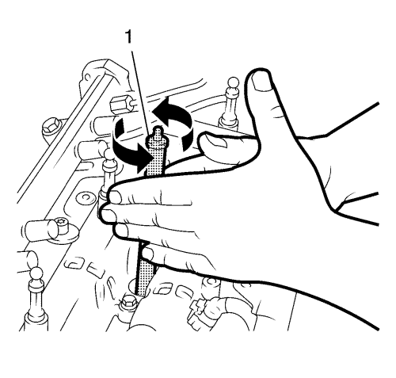
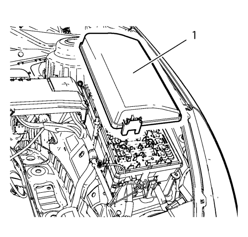
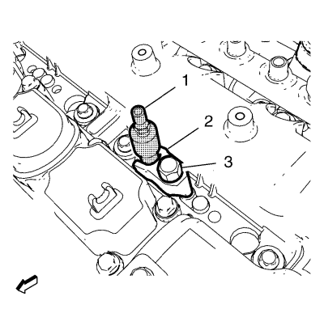

Prueba de compresión del motor
Herramientas especiales
| • | Herramienta de limpieza EN-47632 |
| • | EN-50453 Adaptador - Compresión del aire |
| • | EN-50454 Galga de espesores - Presión del cilindro |
Si desea informarse sobre herramientas regionales equivalentes, consultar Herramientas especiales .
Procedimiento de desmontaje
- Desmontar la pantalla de protección del motor. Consultar Sustitución del protector del motor .
- Desconecte el cable negativo de la batería. Consulte Desconexión y conexión del cable negativo de la batería → sin sistema de arranque/parada.
- Retire los 4 tubos de alimentación de la inyección de combustible. Consultar Desmontaje del tubo de alimentación de combustible de la inyección .
- Retire las 4 válvulas de inyección de combustible. Consultar Desmontaje de los inyectores de combustible .

- Limpie las superficies de sellado de las válvulas de inyección de la culata con la herramienta de limpieza EN-47632 (1) siguiendo este procedimiento:
| 5.1. | Utilice el lado del cepillo para soltar la suciedad. |
| 5.2. | Utilice el lado de la esponja para despegar la suciedad. |

- Desmonte la cubierta del bloque de fusibles del compartimento delantero (1).
- Extraiga el relé de la bomba de combustible.
Prueba de compresión cilindro 1 - 4

- Monte el adaptador EN-50453 (1) en el cilindro 1.
- Monte el soporte de la válvula de inyección de combustible (2).
Precaución:Consulte Precaución con las fijaciones en la sección Prólogo.
- Monte el tornillo del soporte de la válvula de inyección de combustible (3) y apriételo a 14 N·m+110° (124 lib. pulg.) +110°.
Nota: Utilice una galga de espesores con un intervalo de medición de 10-40 bares (145-580 psi).
- Monte la galga de espesores EN-50454 (1) en el adaptador EN-50453 (3).
- Conecte el cable negativo de la batería. Consulte Desconexión y conexión del cable negativo de la batería → sin sistema de arranque/parada.
- Compruebe la compresión del cilindro 1.
Nota: Es necesario un segundo técnico.
- Arranque el motor durante 4 segundos aproximadamente.
Nota: Régimen del motor a 200 r.p.m. como mínimo.
- Anote el valor de compresión.
- Desconecte el cable negativo de la batería. Consulte Desconexión y conexión del cable negativo de la batería → sin sistema de arranque/parada.
- Libere presión de la galga de espesores EN-50454 (1) pulsando el pulsador de desbloqueo (2).
- Retire la galga de espesores EN-50454 (1) del adaptador EN-50453.
- Retire el tornillo del soporte de la válvula de inyección de combustible (3).
- Retire el soporte de la válvula de inyección de combustible (2).
- Retire el adaptador EN-46791 (1) del cilindro 1.
- Repita los pasos del 1 al 13 para determinar la compresión de los cilindros 2, 3, 4.
Procedimiento de montaje
- Monte los 4 inyectores de combustible. Consultar Montaje de los inyectores de combustible .
- Monte los 4 tubos de alimentación de combustible de la inyección. Consultar Montaje del tubo de alimentación de combustible de la inyección de combustible .
- Monte el relé de la bomba de combustible.
- Monte la cubierta del bloque de fusibles del compartimento delantero (1).
- Conecte el cable negativo de la batería. Consulte Desconexión y conexión del cable negativo de la batería → sin sistema de arranque/parada.
- Monte el protector del motor. Consultar Sustitución del protector del motor .
| © Copyright Chevrolet. All rights reserved |